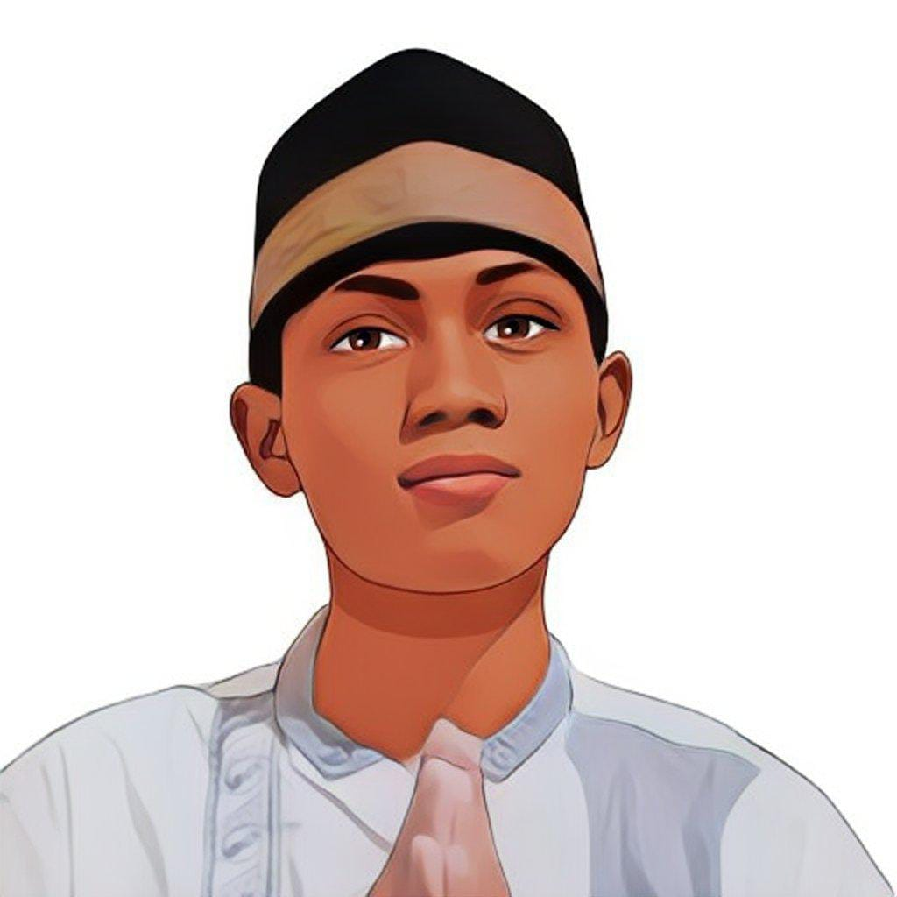

| 
Nama saya Andi Purnomo. dipanggil dengan Andi, mungkin sedikit ambigu bila dipanggil Purnomo apalagi Purno. Saya lahir di Ngawi, 19 Oktober 2002. Saya memiliki mimpi sederhana, yakni meningkatkan perekonomian keluarga. Oleh karena
itu, saya berpartisipasi di MSIB Batch 4 dengan bidang Fullstack Web di PT HTP Handevane Indonesia untuk meningkatkan pengalaman dan prospek menuju ke dunia kerja programmer. Saya memiliki pemikiran bahwa Kita tidak perlu menjadi
orang paling hebat dan terkenal di dunia. Karena muara akhir kita adalah kembali ke Tuhan. Sehingga menjadi standar saja di dunia, namun bisa meraih yang terbaik di Akhirat.
|